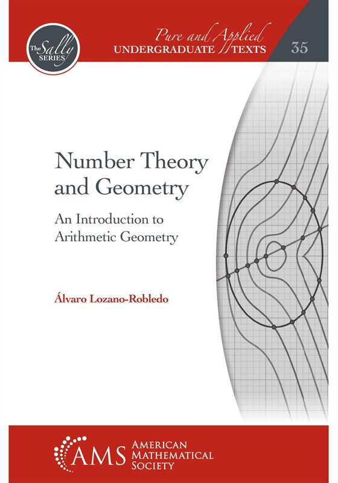

Number Theory and Geometry
An Introduction to Arithmetic Geometry
An introduction to number theory in which geometry motivates the theorems: finding the integer and rational points on lines, conics and cubic curves leads to the fundamental theorem of arithmetic, quadratic reciprocity, continued fractions and Pell's equation, and finally elliptic curves. For a first course in number theory, or a junior–senior course in arithmetic geometry.